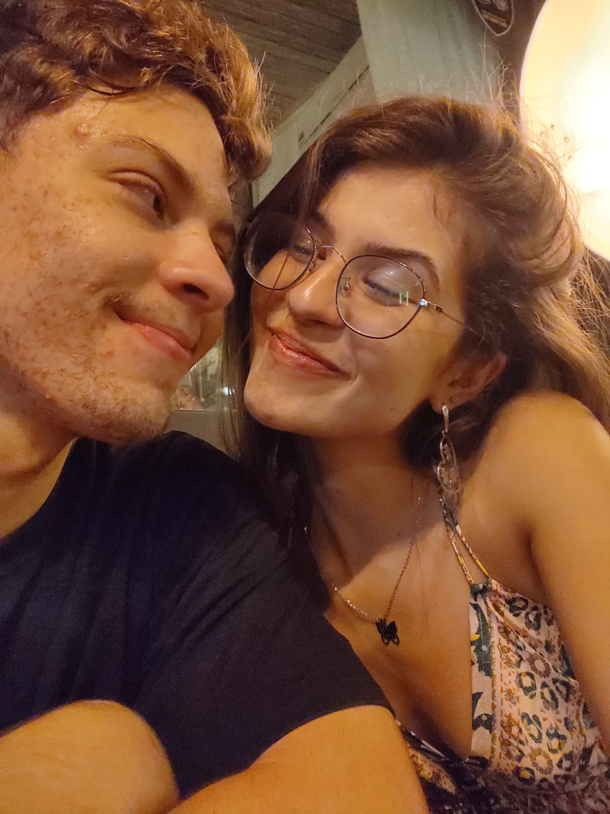
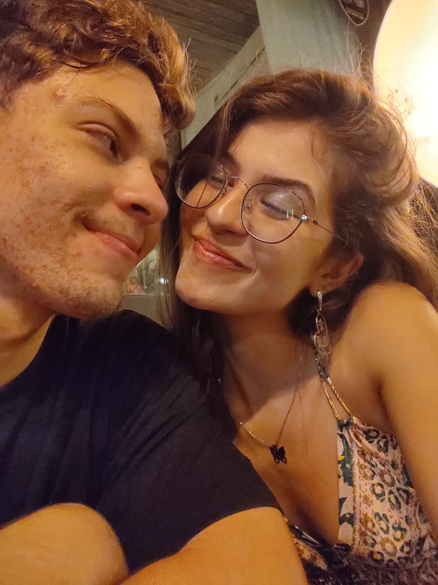

O INICIO
A história começa com uma notificação no Instagram. Abro o perfil e, na hora, me deparo com aquela beldade. Uma mulher linda, com um sorriso encantador, viciada em academia. Fiquei completamente encantado. Sabia que precisava fazer algo para chamar a atenção dela, então não perdi tempo e mandei uma mensagem ousada. Não podia deixar passar a chance. Quando ela respondeu, meu coração disparou. Pensei: "Agora vai!" Demorei um pouco para responder, porque estava tentando achar algo legal para continuar a conversa, até que falei de algo aleatório. Ela demorou para responder, e assim foi por alguns dias. Até que, finalmente, toquei em um assunto que tínhamos em comum e, a partir daí, a conversa fluiu naturalmente. A cada mensagem trocada, me encantava mais. Então, depois de conseguir o número dela, ela sumiu durante o dia todo. Fiquei preocupado, mas à noite, ela apareceu. Eu, com aquele friozinho na barriga, segui a conversa e, no meio do papo, a chamei para sair. Ela aceitou, mas logo pediu para remarcar porque estava gripada. Nessa hora, pensei: “Tá me enrolando”. Mas, para minha surpresa, no horário marcado, ela me disse que poderia ir. E eu fiquei pensando: “É agora, não vou perder isso!” Nos encontramos, e foi impossível não me apaixonar quando a vi. "Nossa, que mulher!
Aqui está a continuação, mantendo o tom direto e com aquele toque de mistério e encanto: Naquele momento, eu já sabia. Ela seria o meu amor. É um sentimento inexplicável, algo que você não consegue colocar em palavras, mas parecia que eu a conhecia a vida toda. Nossa conversa foi tão natural, a conexão foi instantânea. Não tem como explicar, mas algo estava no ar – talvez as câmeras que eu coloquei para vigiar ela, quem sabe? (Brincadeira, ou talvez não…) Mas o fato é que, desde aquele primeiro encontro, tudo nela só me deixava mais apaixonado. Cada gesto, cada sorriso, cada palavra... Quando cheguei em casa depois de vê-la, o vazio começou a bater. Não era só uma saudade, era algo mais profundo. Como se a minha alma sentisse que algo estava faltando. Era ela. Eu tinha acabado de conhecê-la, mas parecia que já fazia parte de mim. O sentimento de saudade me pegou de surpresa, como se ela já fosse uma parte essencial da minha vida.
Galeria
 

Dedicatoria
Dedico este site à minha namorada, que me inspira a ser um homem melhor. Você é o combustível que me move a ser o marido ideal para você, um profissional excelente e um homem de valor. Cada dia ao seu lado é um aprendizado constante. Eu te amo profundamente.